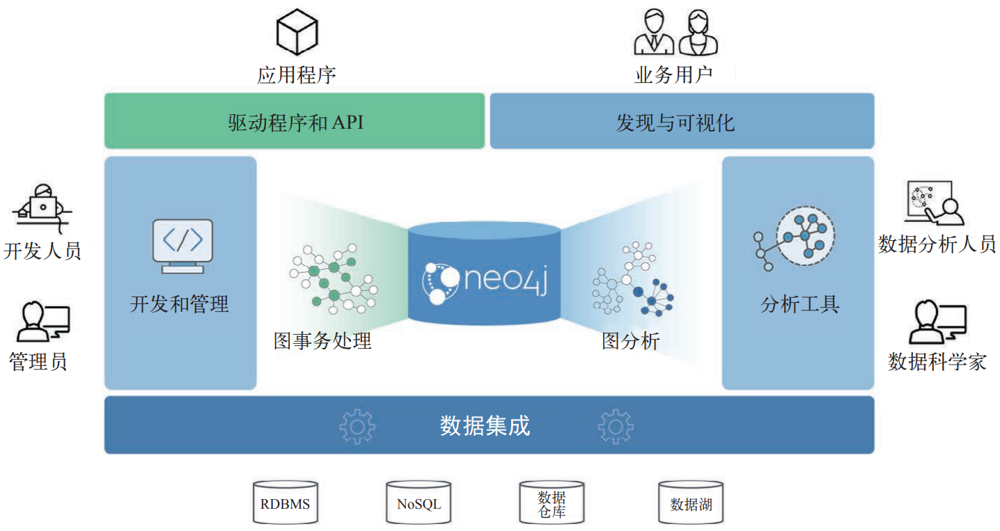

图数据分析
-
图计算引擎：Apache Spark是一个横向扩展和以节点为中心的图计算引擎。
GraphFrames是 Spark 的一个图处理库，于 2016 年替代 GraphX，但是它与核心Spark是分离的。
Spark Graph项目是在Spark 3.0 版本中增加对DataFrame、Cypher 和基于DataFrame的算法的支持。
-
图数据库：Neo4j图平台是图数据库和算法中心式处理紧密集成的典范，针对图进行了优化。
-
兼用Spark和Neo4j进行图处理：将Spark用于大规模数据集的高层筛选与预处理以及数据集成，将Neo4j用于特定处理并且与基于图的应用集成。
Spark Graph
dgraph
安装
当前稳定版本为21.03。
export DGRAPH_HOME=/opt/dgraph-21.03
export DGRAPH_DATA=$DGRAPH_HOME/data
export PATH=$DGRAPH_HOME/bin:$PATH
.
├── bin
│ ├── badger
│ └── dgraph
└── data
系统架构
运行Dgraph需至少包含以下类型节点：
-
Alpha：数据库节点，包括数据存储、访问、管理和节点管理功能。
-
Zero：管理节点，管理集群中的节点，自动在数据库节点间进行数据移动。
-
Ratel：UI服务，支持DQL。Releases · dgraph-io/ratel (github.com)。
对于高可用集群，每类节点至少运行三个实例。
配置
Configuration - Deploy (dgraph.io)
运行
dgraph zero --my=IPADDR:5080
# Setting up grpc listener at: 0.0.0.0:5080
# Setting up http listener at: 0.0.0.0:6080
for ((i=0; i<N; ++i)); do
dgraph alpha --my=IPADDR:7080 --zero=ZERO_IPADDR:5080 -o $i
done
# Sending member request to Zero: addr:"192.168.0.200:7080"
# Worker listening at address: [::]:7080
# Bringing up GraphQL HTTP admin API at 0.0.0.0:8080/admin
# gRPC server started. Listening on port 9080
# CONN: Connecting to 192.168.0.200:5080
# Connected to group zero. Assigned group: 1
# Raft Id after connection to Zero: 0x1
# Node ID: 0x1 with GroupID: 1
# RaftContext: id:1 group:1 addr:"192.168.0.200:7080"
ratel -addr "http://192.168.0.200:8080"
# Listening on :8000...
GraphQL
GraphQL API接口
-
查询接口：
http://alpha-server:8080/graphql（启动服务时日志输出该地址）；curl -XPOST alpha-server:8080/graphql \ --header='Content-Type: application/graphql' --data '...' --data-binary '@file-path.graphql' curl -XGET alpha-server:8080/graphql?query={...}&variables={...}&operation=...POST请求的数据格式支持graphql或json，JSON格式的请求数据支持添加变量等（也可通过客户端分别添加查询语句和变量）。curl -XPOST alpha-server:8080/graphql \ --header='Content-Type: application/json' --data-binary '@file-path.json'{ "oeprationName": "query_name", "query": "query query_name(......", "variable": { "filter": { ... } } } -
管理接口：
http://alpha-server:8080/admin（启动服务时日志输出该地址）；curl -XPOST alpha-server:8080/admin/schema \ --header='Content-Type: application/graphql' --data '...' --data-binary '@schema.graphql'
返回信息：
{"data":{"code":"Success","message":"Done"}}管理接口授权：
"resolving updateGQLSchema failed because unauthorized ip address。
响应数据：总是以JSON格式返回，成功返回data和extensions字段，错误返回errors字段。
客户端
schema
schema定义了实体类型及其包含的属性。
type Product {
productID: ID!
name: String @search(by: [term])
reviews: [Review] @hasInverse(field: about)
}
type Customer {
username: String! @id @search(by: [hash, regexp])
reviews: [Review] @hasInverse(field: by)
}
type Review@withSubscription { //*
id: ID!
about: Product!
by: Customer!
comment: String @search(by: [fulltext])
rating: Int @search
}
*：@withSubscription：启用订阅，当数据更新时，自动向订阅者发送查询结果。
String! @id：使用该字段作为ID；ID!自动生成ID。
Dgraph将根据定义的schema自动生成访问数据的API，包括：
getType(postID: ID!): Type
queryType(filter: TypeFilter, order: TypeOrder, first: Int, offset: Int): [Type]
aggregateType(filter: PostFilter): TypeAggregateResult
注释：
"""xxx"""内容在生成API时会被自动处理为文档。#...会被自动忽略。
修改Schema
通过API提交schema数据可更新schema。
数据类型
-
Int、Float、String、Boolean、Int64、DateTime(RFC3389)。 -
序列类似于无序集合不会存储重复值：
[Type]。 -
ID：不能声明ID类型的序列，每个模式只能有一个ID类型字段。 -
枚举
enum Tag { GraphQL Database Question } type Post { tags: [Tag!]! } -
自定义模式也可作为其他模式的类型声明。
接口
interface Post {
id: ID!
text: String
datePublished: DateTime
}
type Question implements Post {
title: String!
}
type Comment implements Post {
commentsOn: Post!
}
在类型中重复声明接口中已有字段不会产生重复字段，必须具有相同类型及是否为空的条件，其他属性则继承接口声明。
联合
union HomeMember = Dog | Parrot | Human
搜索和过滤
@search命令控制如何构建索引以及搜索类型，基于字段的搜索类型决定在查询时如何设置过滤表达式。
数值类型搜索
Int、Float和DateTime类型，DateTime类型支持设置时间查询单位（包括year、month、data、hour）。过滤条件支持的运算符包括lt、le、eq、in、between、ge、gt。
numLikes: Int @search
querySomeType(filter: { numLikes: { gt: 50 }})
datePublished: DateTime @search(by: [day])
Boolean类型搜索
isPublished: Boolean @search // schema
filter: { isPublished: true } // filter
字符串类型搜索
搜索类型及其对应的过滤运算符：
-
hash：eq、in。 -
exact：过滤运算符与数值类型相同。 -
regexp：regexp。正则表达式必须置于/.../之间（类似于sed语法）。filter: { name: { regexp: "/.*iggy.*/" } } -
term：allofterms、anyofterms。 -
fulltext：alloftext、anyoftext。
支持为字符串类型字段设置多个搜索类型。
枚举类型搜索
搜索类型及其对应的过滤运算符：
- 未指定/
hash：eq、in。 exact：过滤运算符与数值类型相同。regexp：regexp。
地理位置
mutation
mutation {
addProduct(input: [ // add an object of Product*
{ name: "GraphQL on Dgraph"},
{ name: "Dgraph: The GraphQL Database"}
]) {
product {
productID
name
}
}
addCustomer(input: [{ username: "Michael"}]) {
customer {
username
}
}
}
*操作名称基于对象类型和操作类型自动识别。
curl -XPOST localhost:8080/graphql \
--header "Content-Type: application/graphql" \
--data-binary '@add-data.graphql'
query
query [query_name($variable: Type)]{
queryType(filter: { comment: {alloftext: "easy to install"}}) {
// 指定查询字段及其引用对象的字段
comment
by {
username
}
about {
name
}
posts(filter: {title: {allofterms: "GraphQL"}}) {
title
text
datePublished
}
}
}
序列字段也可指定过滤表达式。
查询操作可选择设置名称和传入的变量，如果仅包含一个查询操作，也可省略外侧query关键字。
一个查询语句块中，可包含多个查询命令，返回结果将包含每个查询命令的返回数据。
可以在查询请求中声明多个查询操作，但一次请求只能指定一个操作（通过operationName指定）。
Search and Filtering - GraphQL (dgraph.io)
GraphQL订阅
GraphQL Subscriptions - GraphQL (dgraph.io)
DQL
GraphQL couldn’t support many of the features required from a language meant to interact with Graph data, and we felt some of the features were unnecessary and complicated. So, we’ve created a simplified and feature rich version of GraphQL.
修改schema
curl -XPOST "localhost:8080/alter" --silent --data-binary @alter_schema.dql
RDF文件中的数据字段名称最好添加前缀，避免与数据库中已有字段发生冲突。
schema的定义语法与GraphQL一致。
可通过Ratel UI修改Schema。
mutate
curl -XPOST "localhost:8080/mutate?commitNow=true" --silent \
--header "Content-Type: application/rdf" \
--data-binary "@starwars.rdf"
# --data 'rdf_data'
使用
--data-binary将保留数据中的换行，因此数据中的注释内容能得到正确处理。
查询
curl -XPOST "localhost:8080/query" --silent \
--header "Content-Type: application/dql" \
--data $'{ me(func: has(starring)){ name }}'
查询语法
{
me(func: allofterms(name, "Star Wars"), orderasc: release_date)
@filter(ge(release_date, "1980")) {
name
release_date
revenue
running_time
director {
name
}
starring (orderasc: name) {
name
}
}
}
返回数据为JSON（与GraphQL一致），data字段为图数据对象（与查询语句中命令对象me一致）。图数据包含节点（JSON对象）序列，==每个节点可嵌套JSON对象数组以表示与其他节点的关系==。
Python - Clients (dgraph.io)：Official Dgraph client implementation for Python (Python>=v2.7 and >=v3.5), using gRPC.
Dgraph Query Language - Query language (dgraph.io)
图数据
链路
在类型声明中包含指向另一类型的成员（标量或向量），则在实际声明数据时即创建了链路。
type Author {
posts: [Post] @hasInverse(field: author)
}
type Post {
author: Author
}
双向链路
为了保证数据实例A->B有反向链路B->A，需要在A的外链成员声明后添加hasInverse属性。该属性保证在添加节点时自动更新其外链节点的属性。
Neo4j

Neo4j Desktop User Interface Guide - Developer Guides
Awesome Procedures On Cypher (APOC) - Neo4j Labs
Graph Applications Overview - Developer Guides (neo4j.com)

Neo4j Graph Data Science - Developer Guides
安装运行
安装
yum
rpm --import https://debian.neo4j.com/neotechnology.gpg.key
cat <<EOF> /etc/yum.repos.d/neo4j.repo
[neo4j]
name=Neo4j Yum Repo
baseurl=http://yum.neo4j.com/stable
enabled=1
gpgcheck=1
EOF
sudo yum install neo4j # 社区版
apt
wget -O - https://debian.neo4j.com/neotechnology.gpg.key | sudo apt-key add -
echo 'deb https://debian.neo4j.com stable 4.0' | sudo tee /etc/apt/sources.list.d/neo4j.list
sudo apt-get update
手动安装
tar -xf neo4j-community-4.4.11-unix.tar.gz -C /opt
ln -sf /opt/neo4j-community-4.4.11 /usr/local/neo4j
export NEO4J_HOME=/usr/local/neo4j
Neo4j图算法库
Neo4j图算法库（Graph Data Science）以插件形式与数据库一起安装，提供了一个可通过Cypher查询语言执行的用户自定义程序集。提供了支持图分析和机器学习工作流程的并行算法。这些算法在基于任务的并行计算框架上执行，并针对 Neo4j平台进行了优化。
APOC库
APOC（Awesome Procedures on Cypher）库用于辅助完成数据集成、数据转换和模型重构等常规任务。
Cypher Shell
配置
Java版本：
Please use Oracle(R) Java(TM) 11, OpenJDK(TM) 11 to run Neo4j.
# Paths of directories in the installation.
dbms.default_database=neo4j
dbms.default_listen_addres=0.0.0.0 # 默认监听localhost
dbms.directories.data=/home/neo4j/data #*
dbms.directories.logs=/home/neo4j/logs
dbms.directories.run=/home/neo4j/run
dbms.directories.transaction.logs.root=/home/neo4j/data/transactions
dbms.directories.import=/home/neo4j/import # CSV文件加载源目录,注释取消限制
*：如果运行Neo4j的用户没有Neo4j安装目录的写权限，应该修改输出目录，或修改默认目录的写权限。
NEO4J_ULIMIT_NOFILE=60000
# edit: /etc/security/limits.conf
neo4j soft nofile 40000
neo4j hard nofile 40000
运行
docker
docker run \
--publish=7474:7474 --publish=7687:7687 \
--volume=$HOME/neo4j/data:/data \
neo4j:4.3.5-community
命令行
将neo4j添加到PATH。
neo4j console
neo4j start # background
以systemd服务启动。
[Unit]
After=network.target
[Service]
Environment=PATH=/usr/local/openjdk11jre/bin:/usr/local/sbin:/usr/local/bin:/usr/bin:/usr/bin
Environment=NEO4J_ULIMIT_NOFILE=60000
Type=forking
ExecStart=/usr/local/neo4j/bin/neo4j start
PIDFile=/home/neo4j/run/neo4j.pid
User=neo4j
Group=neo4j
[Install]
WantedBy=multi-user.target
交互命令
访问数据库界面：http://localhost:7474，默认用户名和密码为neo4j:neo4j，首次登录需要修改密码。
API端口：
7687。
数据库和服务器信息：
:server user list/add # 列出/添加用户
:server disconnect
:dbs # 列出服务器中的数据库
:sysinfo # 列出数据存储信息
选择数据库
:use graph_db_name # ":"是命令的一部分
查询语言
变量赋值表达式
WITH "URL" AS base
WITH base + "transport-nodes.csv" AS uri
多条命令使用;分隔。
数据库管理
SHOW DATABASES;
SHOW DATABASE name;
企业版支持数据库创建和修改。
CREATE DATABASE name [IF NOT EXISTS];
ALTER DATABASE name [IF EXISTS] SET ACCESS {READ ONLY | READ WRITE};
START/STOP DATABASE name;
DROP DATABASE name [IF EXISTS] [{DUMP|DESTROY} [DATA]];
定义数据
Neo4j的底层数据类型为Directed Multi-Graph，节点间可存在多条边（多种连接关系）。通过节点/边的标签或者其包含的属性，可获取其中的一个或多个子图用于分析。
添加节点
节点类似于关系型数据库表的一条记录，但没有严格的Schema约束，即每个节点可任意添加属性。具有相同标签的节点通常具有相同的属性。
CREATE (n:NodeLabel {name:'John'}) RETURN n;
CREATE (:NodeLabel {name:'John'});
CREATE ({name:'John'});
创建节点的可选参数（可在后续通过查询节点并补充设置相应参数）：
-
n为当前创建节点的引用标识，用于当前语句后续命令引用（例如RETURN n）。 -
NodeLabel：标签/类型（可选，后续可设置），如果省略了节点标识，则需要保留:NodeLabel； -
属性列表：字典类型
{...}（可选，后续可设置）。CREATE()如果不接受任何属性，则会创建一个空节点。
注意：添加节点时无法检查是否有重复节点，用户需要首先根据属性查询是否有匹配节点再决定是否创建新节点。
添加或更新节点
MERGE (n:Person {name: $value}) // 节点属性用于匹配已有节点
ON CREATE SET n.created = timestamp() // 根据匹配结果：创建或更新节点属性
ON MATCH SET
n.counter = coalesce(n.counter, 0) + 1,
n.accessTime = timestamp()
在节点间添加关系
仅在已有节点间添加关系，需要注意设置过滤条件，否则匹配的点对可能非常多。
MATCH (a:Person {name:'Liz'}), (b:Person {name:'Mike'})
MERGE (a)-[r:EdgeType {since:2001}]->(b);
MATCH (a:Person {name:'Liz'})
MERGE (a)-[r:EdgeType {since:2001}]->(b:Person {name:'Mike'}); //*
*：匹配一个节点，新增一个节点。
(a)-[r]->(b)表示点之间的关系（边）：类似于节点表示，边也可以指定标签Relation和属性{...}（如果没有标签和属性，可完全省略[r]）。Neo4j仅支持创建有向边，即表达式中必须使用-->或<--，不支持--或<-->。
自动创建节点和边。由于不会检测已存在节点或边，通常不使用这种方式添加关系，无法对已有数据进行修改，应该使用
MATCH语句首先获取已有数据。CREATE (a:Person {name:'Todd'})-[r:Friends]->(b:Person {name:'Carlos'}); CREATE (a)-[r:Relation {name: value}]->(b); //*
*：由于未指定节点属性，因此将在所有已存在节点对之间添加边（不推荐）。
查询数据
查询满足条件的节点
MATCH (a:Label {prop...}) RETURN a LIMIT 10;
MATCH (a:Label) WHERE a.prop=value RETURN a.prop AS prop LIMIT 10;
节点/链路的标签和属性用于限定查询范围，可省略。
AS用于定义返回值的别名。
查询关系中的节点
与一类节点有关系的节点，关系描述表达式可使用-->和<--来表示单向边，--或<-->表示具有任意方向的边（这种方式会遍历a->b和b->a返回重复数据，不推荐）。
MATCH (a:LabelA{prop})-[r:LinkLabel{prop}]->(b:LabelB{prop}) RETURN b; //
MATCH (a)-->(b) RETURN b; // 所有对外有关系的节点
查询关系
MATCH (a:Person)-[r:BornIn]->(b:Location {city:'Boston'}) RETURN a,b //查询满足条件的节点
返回数据为表格结构，每一列对应一个返回参数。节点对(a,b)，以及对应的关系r可用于可视化。
通过查询也可以直接获取节点或关系的属性并返回，例如：
MATCH (a)-[r]->(b) RETURN a.name, b.name, type(r) //字段不存在返回null
修改属性
MATCH (a:Person {name:'Liz'}) SET a.age=34, a.title='',...
SET a += {...}
SET a = {...};
MATCH (a:Person {name:'Liz'}) SET a:Student; // 添加(不是替换)标签
MATCH (a:Person {name:'Liz'}) SET a = {}; // 清空属性
MATCH (a:Person {name:'Mike'}) REMOVE a.test; // 移除属性
MATCH (a:Person {name:'Mike'}) REMOVE a:Student; // 移除标签
删除数据
删除边：
MATCH ()-[r]->() WHERE r.id = 123 DELETE r;
删除节点及其关联边：
MATCH (n) DETACH DELETE n // 删除所有节点
MATCH (n)-[r]-() WHERE r.id = 123 AND n.id = 'abc' DELETE n, r //*
MATCH (a:Location {city:'Portland'}) DELETE a
*：如果节点还关联其他边，将无法删除（抛出错误）。
导入数据
导入节点数据
LOAD CSV WITH HEADERS FROM uri AS row // 支持通过HTTP/HTTPS/FTP读取数据
MERGE (place:Place {id:row.id}) // 将CSV节点数据合并到图中
SET place.latitude = toFloat(row.latitude),
place.longitude = toFloat(row.latitude),
place.population = toInteger(row.population)
本地数据通过 file:///导入，仅能导入Neo4j数据库设置的导入目录中的数据。
dbms.security.allow_csv_import_from_file_urls=True dbms.directories.import=import
导入链路数据
LOAD CSV WITH HEADERS FROM "file:///transport-relationships.csv" AS row
MATCH (origin:Place {id: row.src})
MATCH (destination:Place {id: row.dst})
MERGE (origin)-[:EROAD {distance: toInteger(row.cost)}]->(destination)
Python API
Python Driver
连接数据库：
from neo4j import GraphDatabase
uri = "neo4j://example.com:7687"
def write_func(tx, *args, **kwargs):
tx.run(query, **kwargs) # 查询语句中使用占位符`$var`代替要传入的关键字参数
def read_func(tx, *args, **kwargs):
result = tx.run(query, **kwargs)
# 每条record对应查询语句返回的所有参数组成的一行记录。
return [record for record in result]
with GraphDatabase.driver(uri, auth=("neo4j", "password")) as driver:
with driver.session() as s:
# Auto-commit Transactions,
# support only one statement per transaction
# and are not automatically retried on failure.
s.run()
# Explicit Transactions
with session.begin_transaction() as tx:
pass
# Managed Transactions
s.write_transaction(write_func, *args, *kwargs)
result = s.read_transaction(read_func, *args, *kwargs)
result.data() # 将返回数据转换为字典。
# use the driver
使用上下文管理器代替相应的
close()方法。
Py2neo Client
使用
conda安装py2neo可能缺失以下依赖项，需要指定。conda install py2neo monotonic pansi
查询节点
使用NodeMatcher封装获取节点的Cypher查询语句。
from py2neo import Graph
from py2neo.matching import *
g = Graph(uri, auth)
nodes = NodeMatcher(g)
nodes[identity] # [raise KeyError] identity是由图数据库自动生成的*
nodes.get(identity) # return None if not exist.
nodes是所有节点的集合，可进行迭代或获取节点总数(len(nodes))。通常会设置条件过滤后再获取节点。
matches:NodeMatch = nodes.match(*labels, **properties)\
.where('key=value',..., key=value,...)\
.limit(count)\
.skip(count)\
.order_by(*fields)
# MATCH (n:labels {properties}) RETURN n;
# 返回可迭代的节点集合
matches.exists() # 判断匹配是否为空
matches.first()
matches.all()
matches.count()
for node in matches:
print(node)
节点对象
节点对象可在本地创建，或通过查询语句返回（与数据库绑定）。
a = Node('Person', name='Alice')
a.graph # 节点绑定的远端图数据库
a.identity # 节点标识号
a.add_label('Employee') # -> a.labels, a.has_label, a.clear_label
a.update_labels(lables)
如果节点与远端数据库绑定，则节点相等关系取决于数据库分配的ID（与属性或标签无关）；反之，节点仅与其自身相等。
节点数据的访问方式类似于字典对象。节点数据也可转换为字典对象。
a[prop] = value
a.get(prop, default=None)
del a[prop]
a.clear() # 清除所有属性
dict[a] # 节点的所有属性组成的字典
a.items(), a.keys(), a.values(), a.update(**kwargs)
条件表达式
除字符串形式的WHERE表达式外，可通过API构造表达式。
from py2neo import AND, OR
nodes.match("Person", born=ALL(GE(1964), LE(1966)))
运算符类型：
null检查：IS_NULL、IS_NOT_NULL；- 值比较：
EQ、NE、LT、LE、GT、GE； - 字符串比较：
STARTS_WITH、ENDS_WITH、CONTAINS、LIKE（正则表达式）； - 集合比较：
IN； - 逻辑连接：
AND、OR、XOR。
查询关系
类似于节点查询接口。
links = RelationshipMatcher(g)
matches:RelationshipMatch = links.match(
nodes:List[Node]=None, r_type=None, **properties)
nodes指定匹配关系的节点范围（None不限定节点）；r_type为关系类型。
关系对象
KNOWS = Relationship.type("Knows")
ab = KNOWS(a,b)
ab.nodes # -> (a,b)
ab.start_node, ab.end_node
关系对象也可像节点对象一样设置和访问属性。
路径对象
路径对象可通过查询或本地构造获取。Path构造方法的参数由节点对象和关系（关系对象或字符串）交替组成，路径遍历不固定方向，但关系对象的起点或终点必须是上一个节点参数。
alice, bob, carol = Node(name="Alice"), Node(name="Bob"), Node(name="Carol")
abc = Path(alice, "KNOWS", bob, Relationship(carol, "KNOWS", bob), carol)
子图对象
子图Subgraph是任意节点和关系的集合，也是Node、Relationship和Path的基类（子图可以和这些对象运算）。使用子图，可以在本地构造图对象，并与远端的图数据进行运算（创建、合并）。
subgraph | other |... # 合并图(自动去重)
subgraph & other &... # 图交集
subgraph - other -... # 差集
subgraph ^ other ^... # 对称差集(不在其中一个子图中对象)
subgraph.keys() # 所有对象使用过的属性名
subgraph.labels() # 所有节点使用过的标签名
subgraph.types() # 所有关系使用过的标签名
subgraph.nodes, subgraph.relationships
修改图数据库
修改图数据库可直接通过图数据库对象Graph，或通过图数据库对象创建的事务Transaction进行。
with g.begin(readonly=False) as tx:
tx.exists(subgraph)
tx.match(nodes=None, r_type=None, limit=None)
tx.match_one(nodes=None, r_type=None)
tx.create(subgraph)
tx.merge(subgraph, label=None, *property_keys)
tx.delete(subgraph)
tx.delete_all()
tx.suparate(subgraph) # 删除数据库中的关系(保留节点)
当修改数据库查询返回对象并需要与数据库同步时，可通过pull和push方法。
with g.begin(readonly=False) as tx:
tx.push(subgraph) # 将本地修改回写到远端
tx.pull(subgraph) # 从远端获取最新数据
执行Cypher原生查询
类似于
neo4j-python-driver的查询接口。
from py2neo import Cursor
g = Graph(uri, auth)
cs:Cursor = db.run('MATCH (a)-[r:Friends]->(b) RETURN a,b,r')
cs.stats # 命令执行状态
cs.to_supgraph()
Cursor是查询结果Record（一行记录）的迭代器，可使用for语句或调用forward()/current()或next()方法遍历查询记录。使用任何读取方法，都只能从迭代器获取一次数据。
访问记录
通过编号或返回参数名访问Record（访问方法类似于Cursor，区别在于只包含一条记录）。
原始数据批量处理
py2neo.bulk – Bulk data operations — py2neo 2021.1
导出原生查询结果。
graph_data= cs.data(*keys)
# 返回查询结果的字典序列，`keys`为`RETURN`语句指定的返回参数名（`cs.keys()`）。
graph_df = cs.to_data_frame(index=None, columns=None)
图对象映射OGM
py2neo.ogm – Object-Graph Mapping — py2neo 2021.1
图分析算法
配置算法参数：
:param limit => (null);
:param config => ({
relationshipWeightProperty: null
});
:param startNode => ('Amsterdam');
:param endNode => ('London');
:param graphConfig => ({
nodeProjection: 'Place',
relationshipProjection: {
relType: {
type: 'EROAD',
orientation: 'UNDIRECTED',
properties: {}
}
}
});
:param communityNodeLimit => ( 10);
:param generatedName => ('in-memory-graph-1662349638926');
创建和删除内存图实例：
CALL gds.graph.project($generatedName, $graphConfig.nodeProjection, $graphConfig.relationshipProjection, {})
运行图算法：
CALL db.propertyKeys() YIELD propertyKey MATCH (start) WHERE start[propertyKey] contains $startNode
WITH start
LIMIT 1
CALL db.propertyKeys() YIELD propertyKey MATCH (end) WHERE end[propertyKey] contains $endNode
WITH start, end
LIMIT 1
WITH $config AS config, start, end
WITH config { .*, sourceNode: id(start), targetNode: id(end)} as config
CALL gds.shortestPath.dijkstra.stream($generatedName, config)
YIELD nodeIds, costs
UNWIND range(0, size(nodeIds)-1) AS index
RETURN gds.util.asNode(nodeIds[index]) AS node, costs[index] AS cost
删除内存图实例：
CALL gds.graph.drop($generatedName)
NebulaGraph
NebulaGraph Database 手册 (nebula-graph.com.cn)
Apache TinkerPop
Apache TinkerPop™ is a graph computing framework for both graph databases (OLTP) and graph analytic systems (OLAP).